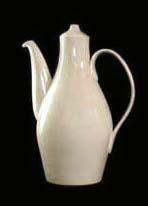
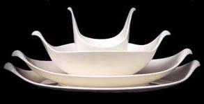

| Eva
Zeisel
Hungarian-born American studio potter and designer
Eva
Zeisel was born in Hungary in 1906. She initially trained
in painting in Britain, then, in the tradition of the journeyman,
went to work as a designer in various European factories in Hungary
and Germany. In 1932 she went to the Soviet Union, again working
in various factories and eventually becoming director of the ‘China
and Glass Industry of the Russian Republic’.
In 1936, in a bizarre twist of fate, she was imprisoned for allegedly
‘plotting against Stalin’ and in 1937 she was expelled
to Austria. She then fled the Nazis, settling in New York, via Britain,
in 1938. Arthur Koestler's novel Darkness at Noon is based
on her experiences.

Zeisel
continued to design ceramics for companies around the world, including
Rosenthal, Noritake and many others. Her elegant, minimalist designs
show the influence of the Bauhaus.
Zeisel taught ceramics and industrial design at the Pratt Institute
in Brooklyn from l939-1952.
The Eva Zeisel
Forum (formerly the Eva Zeisel Collectors Club) is a volunteer
organization with information about Eva Zeisel, her china, porcelain
and glass dinnerware and other housewares.
The Hungarian Connection
Artist of the Week - Maria
Geszler-Garzuly
DVD Review: Throwing Curves
More Articles
More Artists of the Week
|